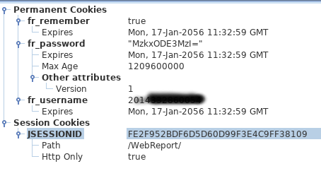

学校每日签到的自动化完成
我们学院比较奇葩，开学了规定我们使用一个叫“数据分析”的 APP 每天晚上都要归寝签到，每天上课都要在课前签到。
1 登录
竟然都不加密登录的……
host = 'http://stu.xinxi.zstu.edu.cn/WebReport/ReportServer'
login = ('__device__={}&__mobileapp__=true&cmd=login'
'&devname={}&fr_password={}&'
'fr_remember=true&fr_username={}&'
'fspassword={}&fsremember=true&'
'fsusername={}&isMobile=yes&'
'macaddress={}&op=fs_mobile_main'.format(device, devname, pw, username, pw, username, macaddress))
参数解析：
- device: 设备类型，安卓手机为 android，我没有 iphone，没有测试 iphone 的设备类型码
- devname: 设备名称
- username: 用户名，即学号
- pw: 密码，即身份证后六位
- macaddress: 设备 mac 地址
登录之后会设置 cookies，之后所有的 post 操作都需要用到 cookies，你可以直接保存 cookies 方便之后使用，或者是使用请求 session 方便之后操作。

cookies 中有一个 jsessionid 的变量将作为本次操作请求的 id 。
2 Session ID 获取
之前获取的 cookies 中的 id 是本次所有请求的 id，而如果需要签到，还需要获取签到这个 session 的 id 。这个 id 是通过 post 请求直接返回的。
param = ('__device__={}&__mobileapp__=true&cmd=entry_report&'
'id={}&isMobile=yes&op=fs_main'.format(device, id))
参数:
- device: 设备类型
- id: 这里指的是不同请求页面的 id ，是一个固定值。比如上课签到的 id 是 2663，归寝签到的 id 是 2724 。
同样是 post 方法获取。
3 签到
每次签到之前和签到之后都需要通过下面这个方法打开签到会话。
param = ('__device__={}&__mobileapp__=true&isMobile=yes&'
'op=closesessionid&sessionID={}'.format(device, sessionid))
之后是签到需要发送的参数：
param2 = ('timetype=1&title={}%25B0&time={}&'
'jingdu={}&weidu={}&reportlet=2017%'
'252Fbaodaocheck_enter.cpt&op=write&__replaceview__=true'
'&__device__={}&__mobileapp__=true&isMobile=yes'
.format(title, time, lon, lat))
参数分析：
- title: 固定参数，某个 title 的 url 字符码
- time: 当前时间，格式为 时 + %253A + 分 + %253A + 秒
这里的 %25 在 url 中表示
%用来制定特定字符，3A 在 ASCII 码表中指: - lon: 经度
- lat: 维度
4 提交
最后一步是提交签到信息给服务器。
param = ('__device__={}&__mobileapp__=true&cmd=write_verify&'
'isMobile=yes&op=fr_write&reportXML=%3C%3Fxml+version%3D'
'%221.0%22+encoding%3D%22UTF-8%22%3F%3E%3CWorkBook%3E%3CVersion'
'%3E6.5%3C%2FVersion%3E%3CReport+class%3D%22com.fr.report.'
'WorkSheet%22+name%3D%220%22%3E%3CCellElementList%3E%3C%2FC'
'ellElementList%3E%3C%2FReport%3E%3C%2FWorkBook%3E&'
'sessionID={}'.format(self.device, sign_sessionid))
参数分析： device: 设备 signsessionid: 签到的 session id
5 结束
6 自动化
我的思路是，在 linux 服务器或者是你的 linux 电脑上部署 crob 定时自动执行脚本。